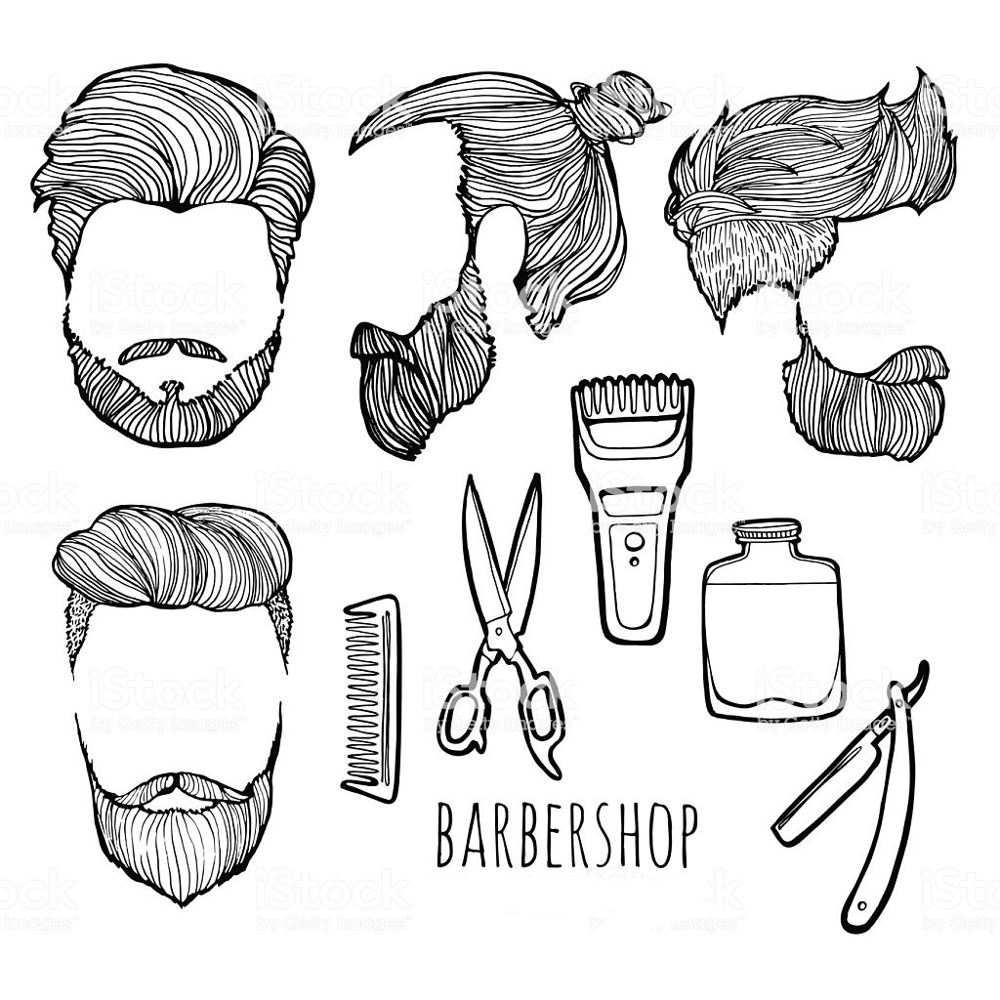
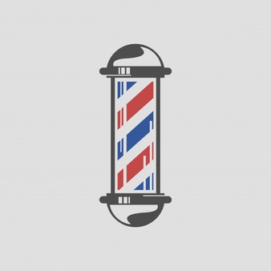
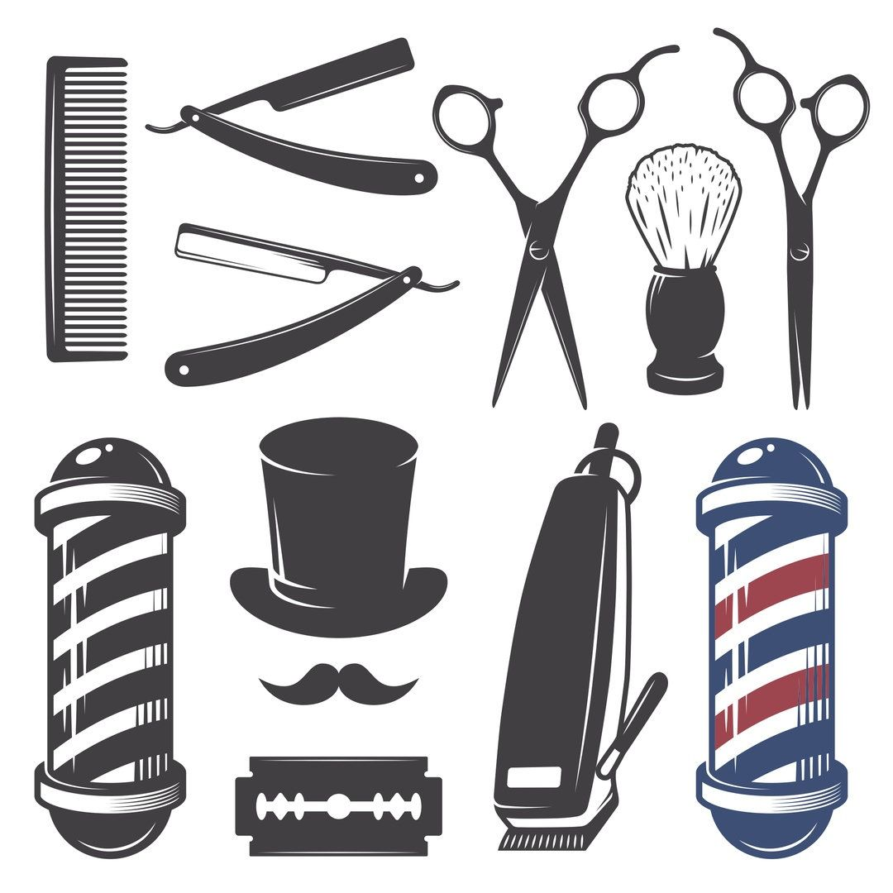
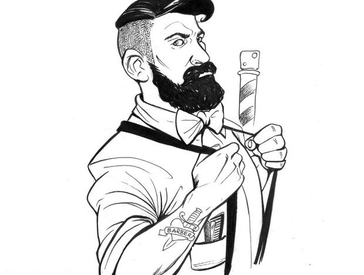
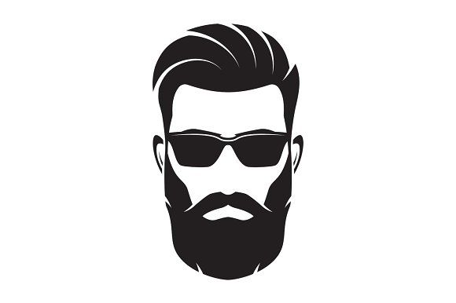

Barbershop
История целой культуры.

Первые чисто мужские парикмахерские появились в Америке и Европе примерно в 18 веке.Название барбершоп, происходит от латинского слова «Barba», что означает - борода. Отличительной чертой мужских парикмахерских являлось полное отсутствие женщин, как среди клиентов, так и среди мастеров. В 1886 году был основан профсоюз барберов -Barbers' Protective Union en Columbus, Ohio, и в 1887 г. Journeymen Barbers International Union in Buffalo, New York.Примерно в 1970х годах барбершопы получили небольшой упадок в связи со стремительно развивающейся модой на ношение мужчинами длинных волос, истинные цирюльники просто не умели работать с ними. Любители длинных волос обращались за стрижками в женские парикмахерские.
Барбершопы и барберинг называют культурой, а сами мастера считают это образом жизни. Цирюльники постоянно развиваются в своем деле, посещают и сами устраивают мастер классы, показательные выступления и соревнования повышая уровень своих навыков. Барбер это не просто парикмахер, это хороший собеседник, который готов поддержать разговор на любую тему. Барбер всегда даст рекомендации по уходу за волосами, посоветует средства и укажет на недостатки. Посещение цирюльни становиться ритуальным событием целью, которой уже есть не только качественная стрижка, но и общение.
История появления барберпол уводит нас в начало 1930-х годов, тогда парикмахерские услуги стали отделяться от медицинских. Так, врачебным символом стал красный столб, а парикмахерским – сине-белый. Заведения, в которых по-прежнему оказывали и те, и другие услуги, использовали известный ныне триколор. Красный цвет символизировал кровь, синий – вены, белый – стерильные бинты. Есть и другая версия происхождения трехцветных цилиндров. Она говорит о том, что красный и белый цвета барбер-пол получил в наследство от вывешенных на просушку окровавленных и чистых бинтов, которые можно было видеть у всех цирюлен. Они раздувались ветром, как-бы оборачивая столбы, на которых крепились.
Посещение барбершопа – удел сильных и стильных мужчин, не желающих носить шаблонные стрижки и посещать обычные парикмахерские. Если у входа вращается трехцветная лампа, значит, внутри ждет нечто особенное. Ведь культура барберинга – гораздо более глубокое понятие, чем может показаться на первый взгляд. Скептики могут сказать, что здесь просто подстригут втридорога и на этом все. Но посетив заведение однажды, мужчина, скорее всего, больше никогда не захочет возвращаться в обычную парикмахерскую. Все дело в атмосфере, отношении, самой сути культуры, которая представлена в современных барбершопах. Стильные оформление интерьера, дорогие профессиональные кресла, мягкие диваны, игровые приставки, отличная музыка и напитки на любой вкус. Действительно на любой, ведь здесь предлагают не только кофе и чай, но и кое-что покрепче. В большинстве цирюлен мужчине предложат хороший виски, который поможет расслабиться и отдохнуть от надоевшей рутины.
Прежде всего, барбер – это мужской парикмахер. Парикмахер высокого уровня, который обучается долгие месяцы, и даже годы, чтобы стать истинным цирюльником, брадобреем, барбером. Учатся Профессия барбер – это не только стричь, брить и оформлять бороду, такой человек немного психолог, отчасти актер, а также товарищ, вдохновитель. Именно он знает, как обращаться с волосами на лице, придать им форму, которая будет подчеркивать индивидуальный образ мужчины. Он сможет подстричь так, чтобы уверенность и стиль читались с первого взгляда. Это совсем не то, что предлагают в ближайшей парикмахерской.Также барбер – это важный элемент культуры в целом и конкретного барбершопа в частности. Большая часть таких мастеров – стильные уверенные в себе мужчины. Это читается в одежде, прическе, бороде и усах, татуировках, манере держаться. Создается особая атмосфера, располагающая к расслаблению, разговору, без женщин и суеты. Клиент сидит в удобном кресле, пьет чай, кофе или что-то покрепче, может сесть на диван, полистать журнал или поиграть на приставке. Едва ли такое можно встретить в рядовых парикмахерских за углом.
Средняя скорость роста волос на лице составляет 14 см в год. У брюнетов борода растет медленнее, чем у блондинов. Интересно, что борода может сэкономить мужчине 95 дней жизни. Именно столько времени среднестатистический представитель сильного пола тратит на бритье в течение жизни.В Древнем Риме борода считалась признаком варвара. Поэтому римляне старались гладко брить свои лица. С этим связан интересный факт: первое бритье юноши отмечалось как семейный праздник. Европейская традиция отказываться от бороды в пользу чисто выбритого лица пришла из Франции XVII века. Дело в том, что в 1638 году королем этой страны стал Людовик XIV, которому на тот момент было всего 15 лет. Естественно, борода у него не росла. Придворные подхалимы стали сбривать бороды, чтобы походить на короля. Так появилась мода на бритье, которая позже распространилась по всей Европе
© 2019 Name Surname.